Findings
1 Corporate Structures
1.1 Typical transactions from an investor usually involves only one industry.
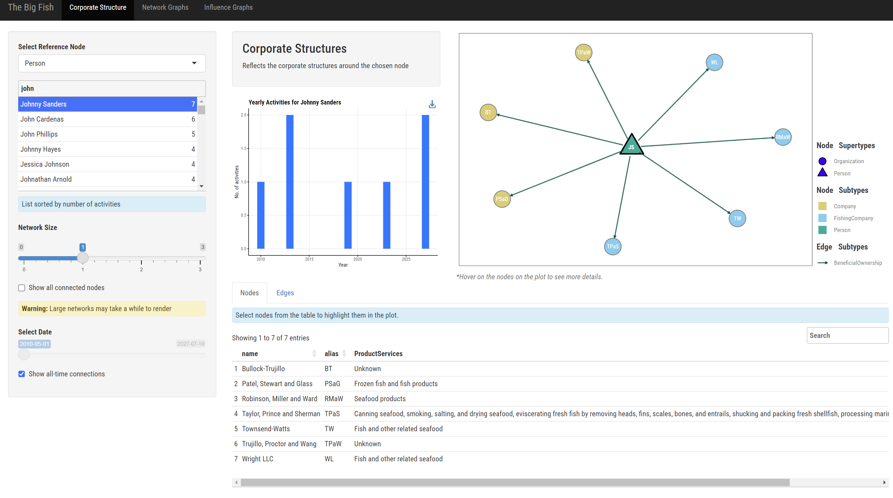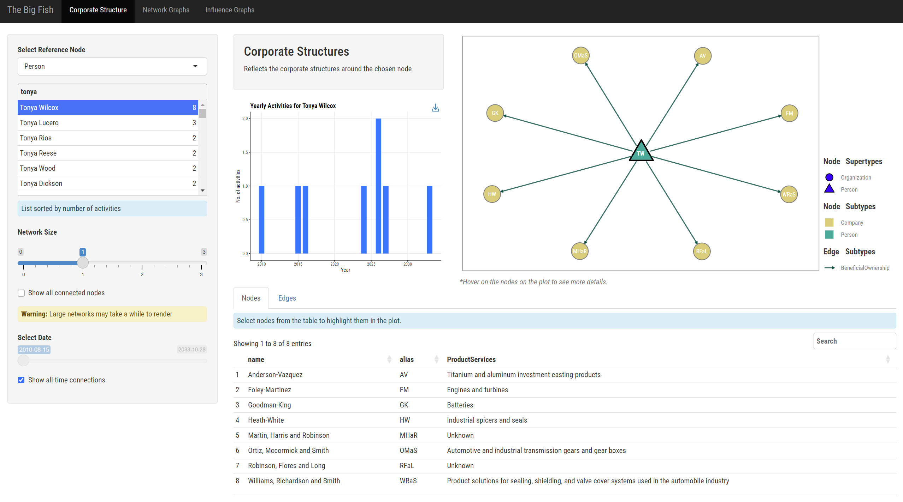
In the given examples, Tonya demonstrates a strategic focus on investing in companies associated with engines, while Johnny directs his investments towards the seafood industry. This distinction underscores a prevalent pattern where investors often gravitate towards sectors they possess familiarity with, leveraging their knowledge and insights for informed decision-making in their investment strategies.
Conversely, investing completely unrelated industries may be perceived as unconventional or even suspicious, as it deviates from the norm of investing in areas aligned with one’s expertise or established market understanding. This divergence from expected investment patterns prompts scrutiny into the rationale behind such decisions, and the potential risks associated with investing outside one’s domain of familiarity.
1.2 Downs Group attract an unusually high number of investors, which raises suspicions.
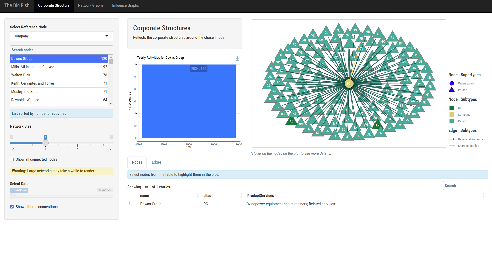
While most companies attract fewer than 10 new investors per year, Downs Group attracted 120 shareholders in 2034. This raises suspicion, as investors typically exercise caution when investing in new companies. Such a significant surge in shareholder interest prompt questions about what factors might have contributed to this rapid increase in investor confidence towards Downs Group.
1.3 The top 22 investors are investing in similar companies and collectively hold significant stakes in them.
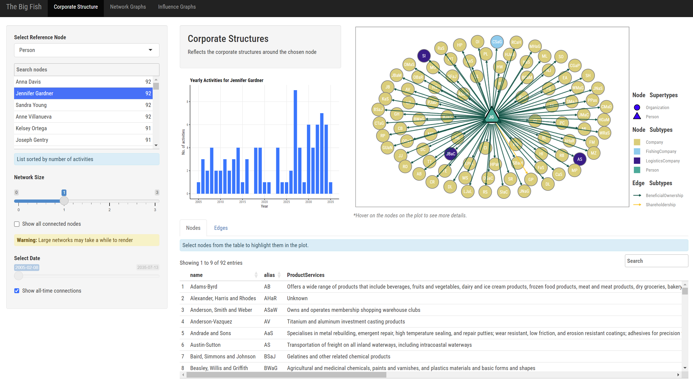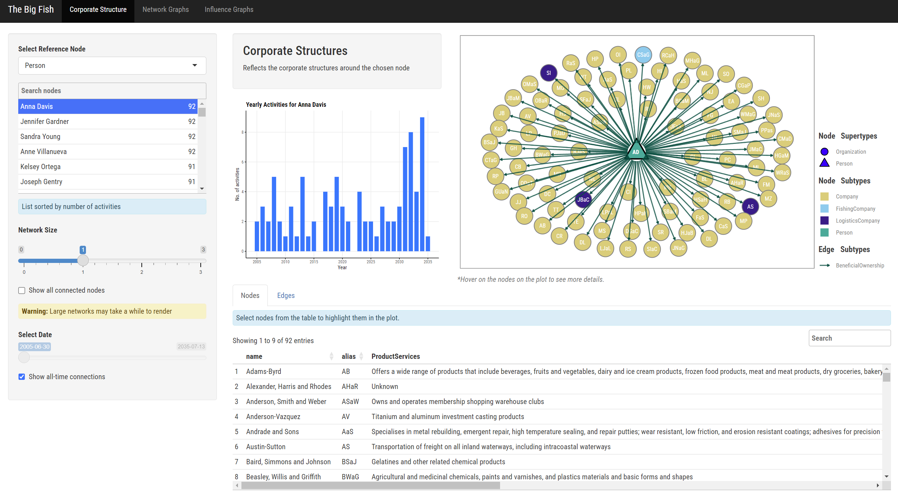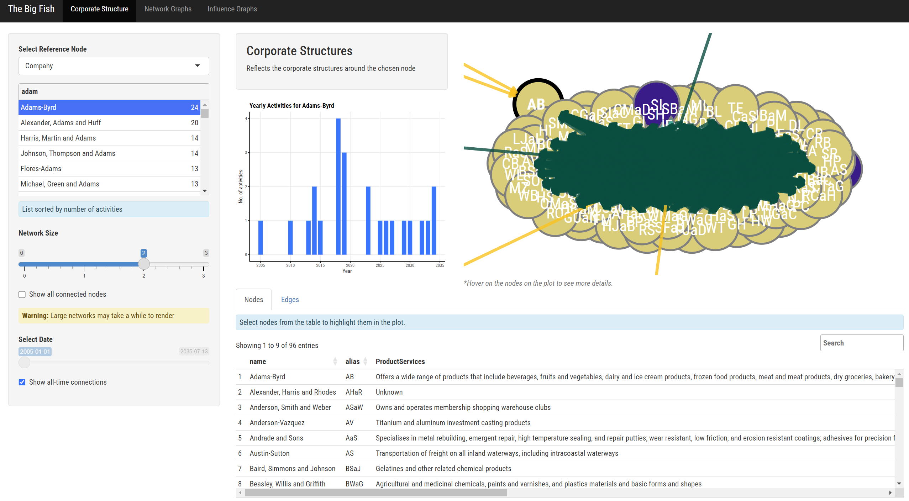
The companies chosen by the top investors exhibit striking similarities. Upon examining image 3, it becomes evident that these investors not only target the same companies but also exert considerable influence due to the minimal presence of external shareholders or owners. This scenario suggests that a small, influential group of investors holds significant control over these companies.
While these companies are not directly interconnected, they are intricately tied through the shared ownership and influential decisions made by this select group of shareholders. This concentration of ownership raises important considerations about the dynamics of corporate governance and market competition. As these investors continue to consolidate their positions, their collective influence could shape industry trends and strategic outcomes across the market landscape.
1.4 Some companies are interconnected and controlled by a single individual.
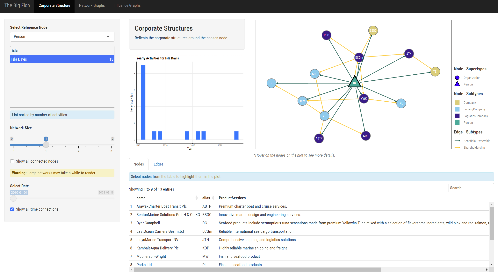
In this scenario, Isla is the beneficial owner of all the interconnected companies. It clearly indicates that she holds a significant and influential investment stake across these enterprises. By maintaining such extensive ownership, Isla likely exerts substantial control over the strategic and operational decisions of these companies, steering their direction and shaping their market behavior. This level of concentrated ownership underscores her role as a major investor, highlighting her pivotal influence within this network of businesses.
1.5 NGOs and News Company operate independently
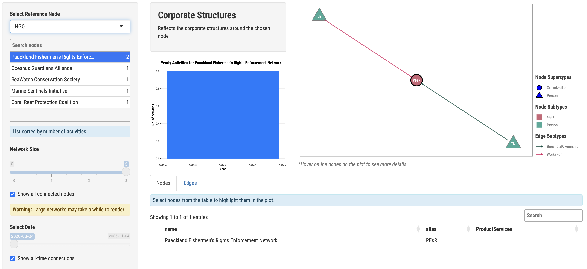
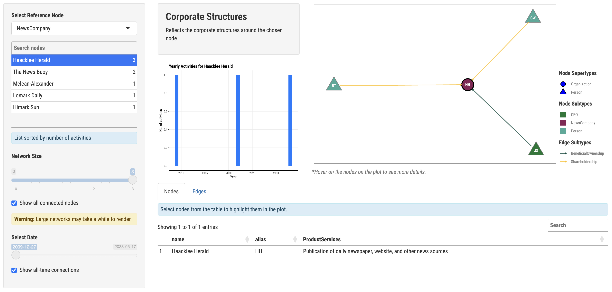
NGOs and news companies generally have conflict of interest with other business as they must be impartial and not be influenced by other companies’ business interests.
All, except one (see [2.3.1 Acquiring control of The News Buoy]), of these entities operate independently and activities only involve founding, employee hiring, involvement of another independent shareholder.
This suggests that NGOs and news companies are generally free of influence and can maintain their impartiality.
2 South Seafood Express Corp
2.1 Influential entities in the network
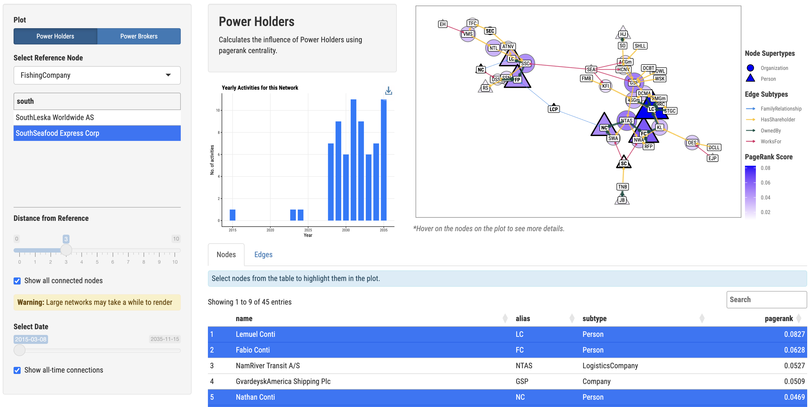
Although these people are not all related based on FishEye’s data, the information available to us suggests that this business network is controlled by a group of people belonging to the Conti Clan. This includes people related to the family by marriage like Fintan Park, who is married to Lena Conti-Park.
It is highly likely that these people cooperate to maintain their control over all the fishing businesses in the network, which can pose a great challenge for FishEye in cracking down on illegal fishing.
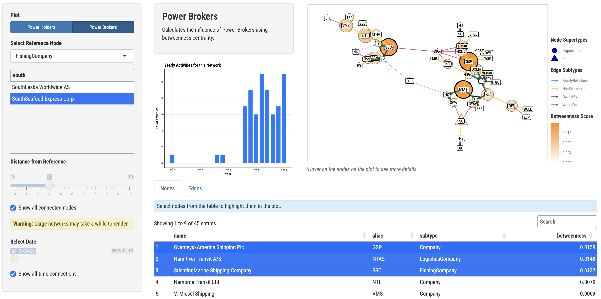
The biggest companies in direct control of the Conti Clan serve as the power brokers in the network. This is because the clan uses these companies to exert control the other companies control.
Without visualizing the network, it may be difficult to follow the paper trail and identify the people behind the illegal fishing activities especially if it is hidden behind a series of companies.
2.2 Suspicious period
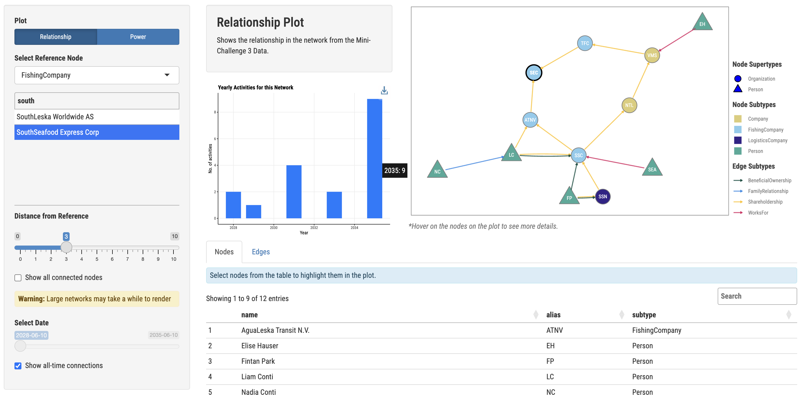
Year 2035 is the the most suspicious year as it is the year with the most transactions after years of little to no activity.
2.3 Suspicious transactions
2.3.1 Distancing from SouthSeafood Express Corp
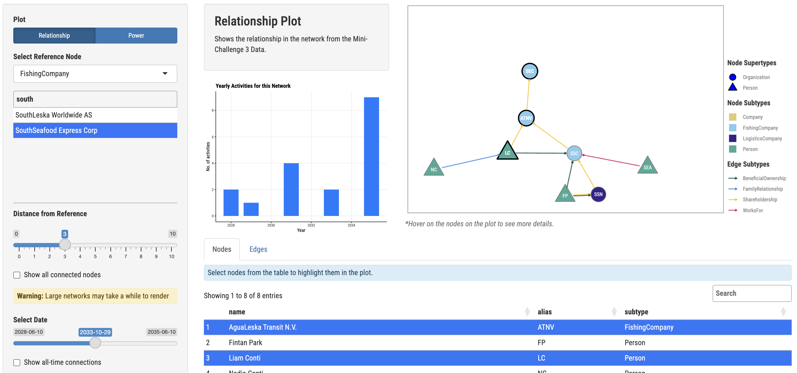
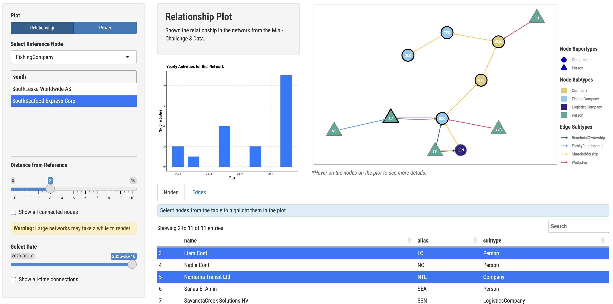
From having only 1 company between Liam Conti and SouthSeafood Express Corp, there are now 4 companies between them.
This could be an effort to distance himself from the company after being caught illegal fishing. These series of actions couldn’t have been executed quickly, in a span of less than 2 months, without any help. Being part of a power business network like the Conti Clan have played a part in this execution.
2.3.1 Acquiring control of The News Buoy
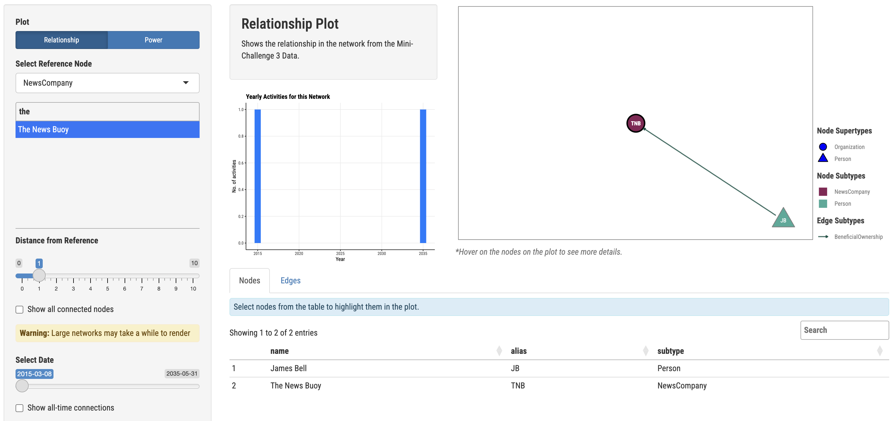
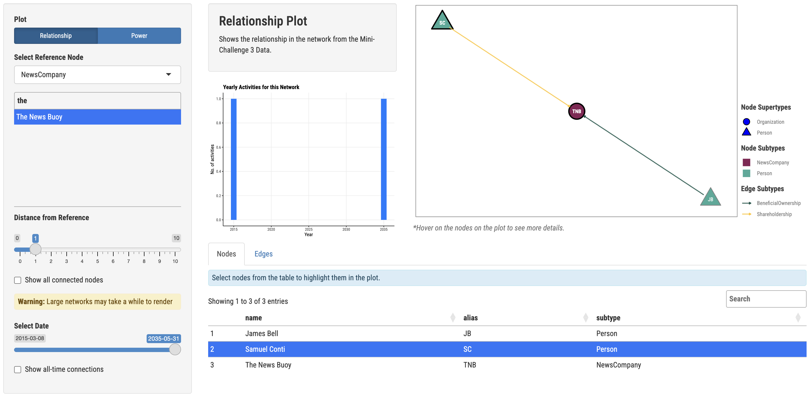
In 2015, James Bell founded The News Buoy, a news company. 20 years later, Sam Conti becomes a shareholder of the company. He is a member of the aforementioned Conti Clan.
This is a very suspicious transaction as NGOs and news companies in Oceanus operate independently and without any connection to any other business. However, Sam Conti becoming a shareholder of The News Buoy will highly likely introduce bias in favor of the Conti Clan in the articles that the news company publish.
This could be an effort for the Conti Clan to control the narrative especially as one of their companies was caught illegal fishing.
It would be interesting to find out if Mini-Challenge 1 would lead to the same conclusion.